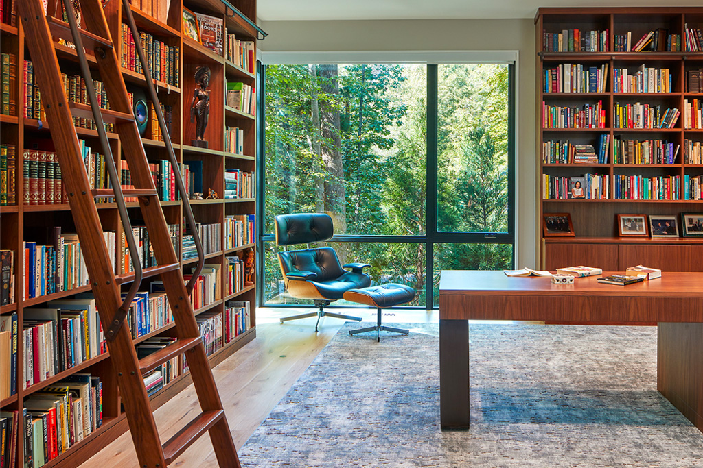
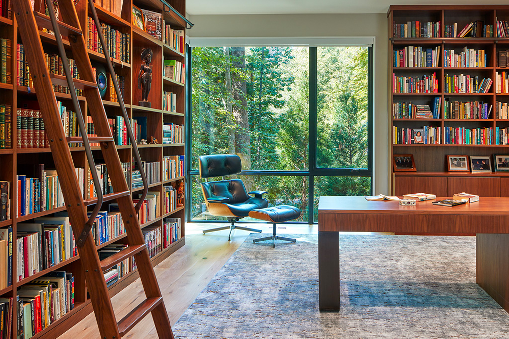

Thorsen is a 3rd generation boutique-style custom builder that focuses on architect-driven residential projects in Virginia, Maryland, and Washington, D.C. Our firm is comprised of a seasoned management team and a group of highly skilled “in-house” craftsmen. The ability to have a large portion of our work performed by Thorsen employees results in greater efficiency and project control in 3 key areas: 1) Quality control 2) Cost control 3) Timeline control. This “in-house” approach coupled with our 40+ years of building experience is one of the reasons why Thorsen was recently voted DC’s Custom Builder of the Year.
In May of 1976 Bob Thorsen and his father, Jim, founded Thorsen while
building homes along the Shenandoah River outside of Woodstock,
Virginia. It was during these early years that Bob quickly learned the
values of hard work, accountability, and quality construction.
As the US economy continued to lag from the 1970’s recession, Bob knew
the company had to make a change and decided to relocate the business
north to Alexandria in 1978. It was soon after relocating to Alexandria
that Bob would discover his right-hand man and current Senior Vice
President, Jim Davis. Over the next 25 years Thorsen developed a
reputation as being one of the top local builders in Alexandria. It was
also during this time period when Bob would have his three sons working
in the field over their spring, summer, and winter breaks from high
school and college. While working over the college breaks, did the idea
of 3rd generation Thorsen begin to blossom.
Between 2006 and 2010, Bob’s three sons and eldest daughter Rebecca
joined the family business after graduating from Randolph-Macon College.
As a family unit consisting of the fresh ideas, energy, and experience,
Thorsen expanded operations into greater northern Virginia, Washington,
D.C., Maryland, the Eastern Shore, and the Piedmont Region of Virginia.
Each year since, Thorsen has experienced steady growth due to the
company’s project approach, valued relationships, and steadfast
commitment to excellence.
 

President
Senior Vice President

Executive Vice President
Vice President of Construction
Project Manager
Project Coordinator

To speak with one of the team members, please call 703.501.1506